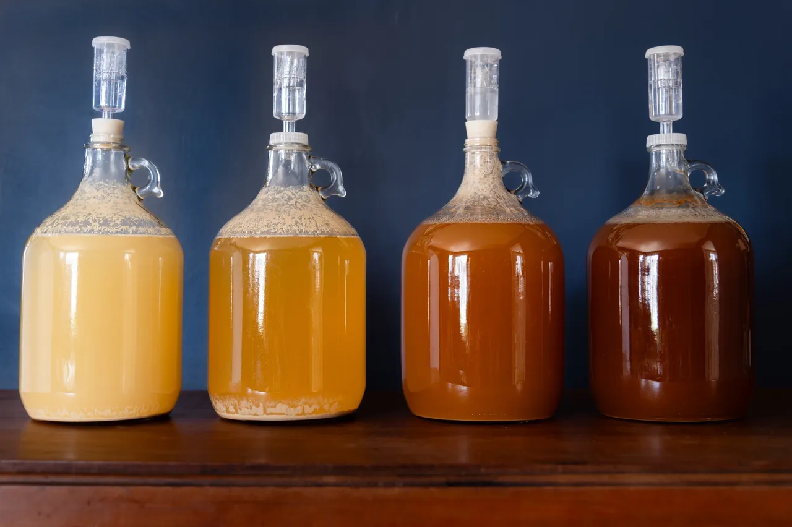

What Is Mead?
Mead or honey wine is a honey based alcoholic beverage which can have an alcohol content ranging from 6-20% alcohol by volume (ABV). It is simple to brew at home because the process can be completed at home with minimal equipment it requires only water, honey, and yeast and the fermentation.

What are Yeasts?
Yeast are microscopic organisms (fungi) that convert sugars into alcohol and CO2 in a process called fermentation. They consume sugars, producing alcohol and CO2 as their waste products. Different types of yeasts have different alcohol tolerances meaning that after a certain alcohol by volume (ABV) is reached the yeast can no longer produce more alcohol in that environment even if there are more fermentable sugars present.Wine and brewing yeast strains tend to have higher alcohol tolerances so if you decide to use a bread yeast your mead might not reach as high of an ABV. There is a lot of variability among yeast of even the same species so individual packets will be different and you may get very different results in terms of ABV and flavor with the same yeast strain and recipe. When not using your yeast it should be stored in the fridge or freezer to last longer.
Honey does not provide all the necessary nutrients for yeast such as nitrogen so yeast nutrients should be added to your brew to make it more successful. Without nutrients fermentation may be slower, or stop completely before it is done.
There are many commercial yeast nutrients that can be used including diammonium phosphate, Fermaid K, and Fermaid O. However, they are not all as equally effective. For example, diammonium phosphate (DAP) can add some weird flavors to your brew as well as stall fermentation and certain DAP products contain a carcinogenic ingredient. Fermaid O is probably the healthiest nutrient for yeast leading to a steadier fermentation.
An alternative to buying one of these yeast nutrients is just to use dead bread yeast. Using 2 to 3 times as much dead bread yeast as a commercial nutrient will be just as effective as Fermaid O and much cheaper. To kill your bread yeast you can either bake it or boil it for a few minutes at 140℉. Some brewers prefer to stagger their nutrient additions by adding their nutrient of choice in two or three portions over a span of a few days; however it is just as effective and less complicated to frontload your nutrients when you start your mead.